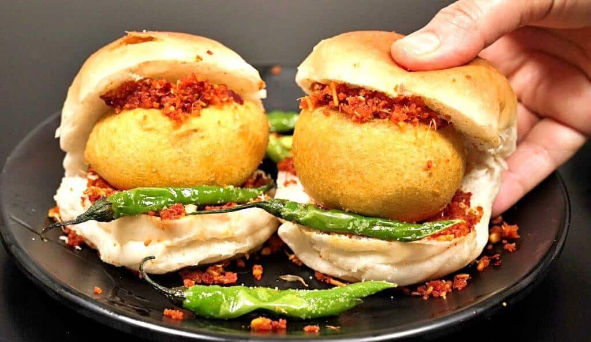
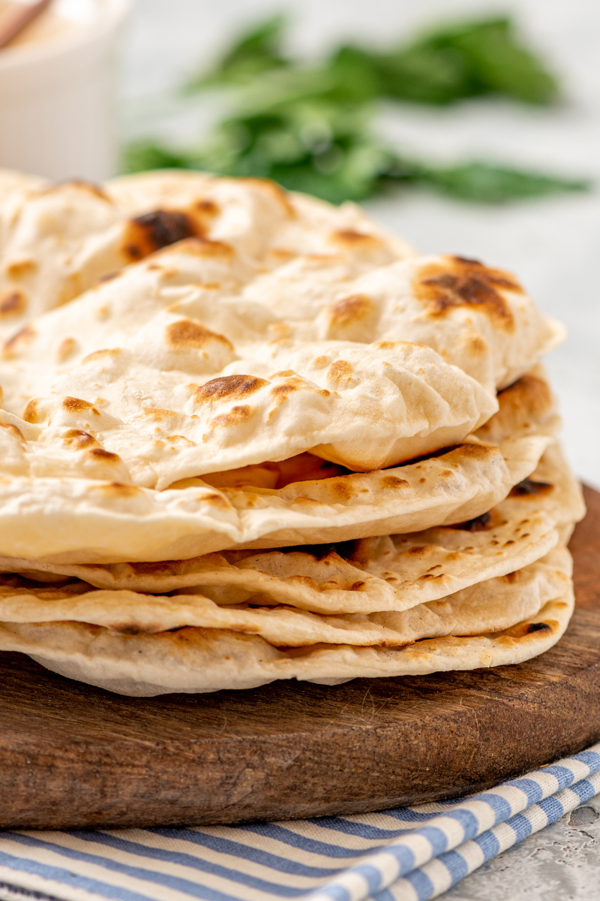
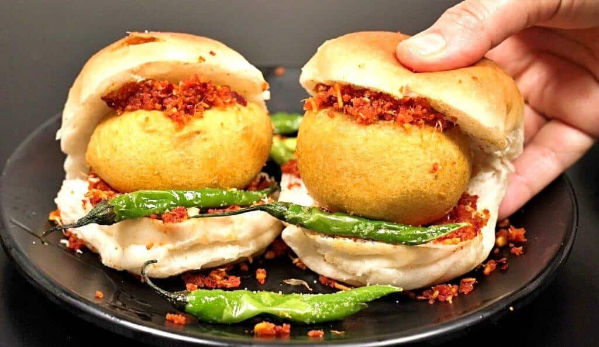
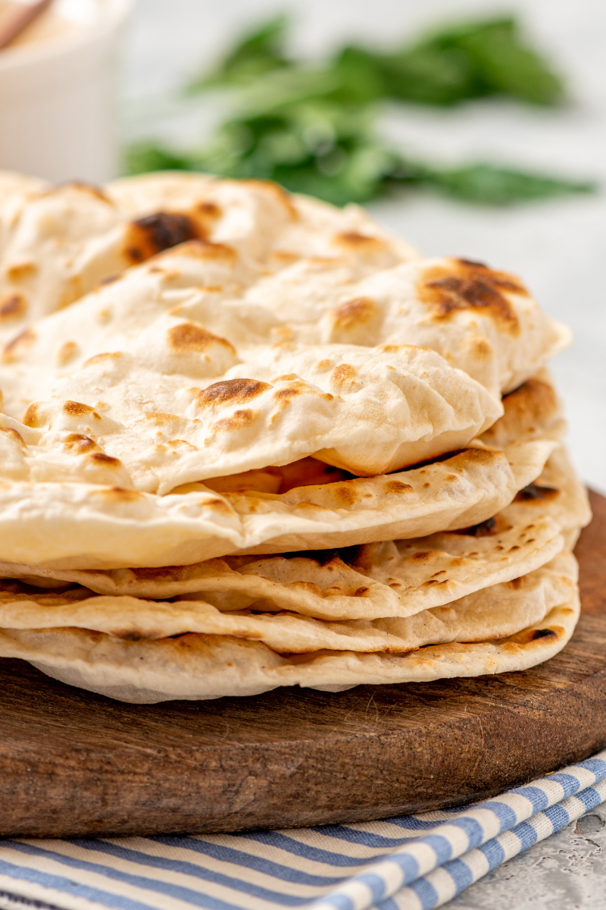
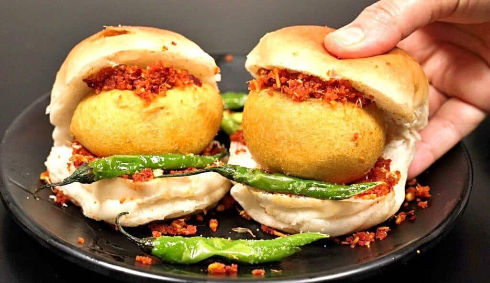
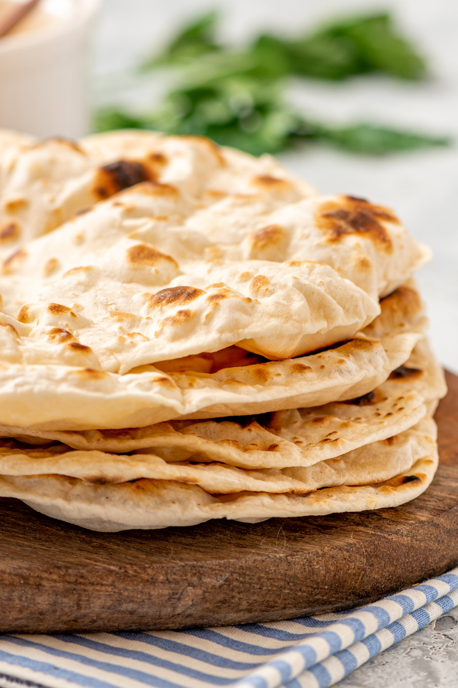

Travel isn’t just movement on a map—it’s a soft rebellion against routine. It’s the ancient urge our ancestors felt when they followed rivers, stars, and stories. In a world obsessed with speed, travel teaches us to slow down and listen. I didn’t go looking for luxury. I went looking for truth. The road welcomed me with dusty tea stalls, cracked pavements, and smiles that didn’t need Wi-Fi. Every sunrise felt like a boardroom reset—new KPIs, new priorities, same mission: be present. The Beauty of Simple Places There’s magic in places that don’t try too hard. Old towns where walls remember history. Markets where bargaining is an art form passed down like folklore. Grandparents sipping tea, watching time pass like a patient old friend. Modern travel sells checklists. Traditional travel teaches connection. People Are the Destination I learned this fast: monuments impress, but people transform. A stranger offering directions. A family sharing a meal. Laughter breaking language barriers like it’s nothing. That’s the real ROI of travel—empathy, perspective, humility.

